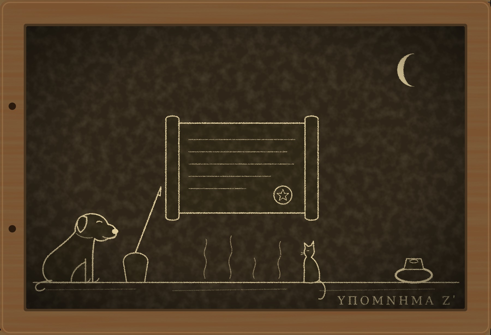

Гипомнема VII Заказчик

I
Стражи слов не любят писем. Письмо говорит за человека, когда того нет рядом, и никто не может спросить у бумаги, что она имела в виду. Человека можно привести к Дию Фидию, а письмо нельзя. Поэтому в Риме письмами обмениваются о погоде, о здоровье и о ценах на масло, а всё, за что могут спросить, говорят вслух при свидетелях. Так, по крайней мере, принято считать. Последние два года показали мне, что принято считать в Риме многое.
Весной в Африке проконсул Сабиниан объявил себя Августом. Продержался он недолго: наместник Мавретании разбил его войско, и карфагеняне, рассудив здраво, сами выдали своего императора. В Риме об этом говорили неделю, а потом заговорили о другом. Сабиниан, прежде чем объявить себя Августом, переписывался с Римом, и в Риме, по слухам, нашлись сенаторы, которые ему отвечали.
Гостя я услышал на втором пролёте. Он шёл ровно, не отдыхая и не считая ступеней. На деревянной лестнице он не сбавил шага и на третьей ступени сверху, где лежит новая доска, ступил на неё так же, как на остальные. Так ходят по чужой лестнице только те, кто по ней уже ходил.
Ферокс бросился к двери, как бросается ко всем. Но, добежав, он не стал прыгать гостю на грудь, а взял его зубами за край плаща и потянул внутрь, бережно и настойчиво. Так он поступает только с теми, кто уже бывал в этом доме: водоносом, Никанором, Диодором. Новых людей он любит, а старых водит.
— Хороший пёс, — сказал гость и позволил довести себя до табурета.
Он сел и сложил руки на коленях.
Я узнал его не сразу. Когда-то это был мальчик с тонкой шеей, который сидел за моим столом и смотрел в стол, а в последний раз я видел его четырнадцать лет назад, в углу базилики за колоннами. Сейчас передо мной сидел человек за сорок, с обыкновенным лицом, какие видишь в базилике по сотне в день и не запоминаешь ни одного. Узнал я его по рукам и по тому, что он молчал, ожидая, пока я заговорю первым. Раньше первым всегда говорил он.
— Евмен, — сказал я.
— Здравствуй, Мнесарх.
Пами спустился с балки, обошёл табурет и сел у моих ног, лицом к гостю. Ферокс лёг у двери и смотрел на нас по очереди, довольный, что в доме собрались все свои.
— Ты был здесь, — сказал я.
— Был. Позапрошлым летом, в ночь, когда ты ночевал в лагере. Пёс тогда тоже был в лагере, а кот меня не заметил или сделал вид. Хорошая у тебя половица. Я положил всё так, как лежало.
Пами при этих словах поднялся и ушёл обратно на балку. Обиделся он, как я понял потом, не на гостя, а на то, что его поймали на недосмотре.
II
— Я пришёл заказчиком, — сказал Евмен. — Двору нужна формула.
Говорил он так, как говорят стражи, когда диктуют: ровно, без лишних слов, с паузами там, где их нужно запомнить. Я слушал и ловил себя на том, что запоминаю, хотя не хотел.
Письма Сабиниана нашли в Карфагене. Среди них были ответы из Рима, без имён, но с оттисками печатей. Печатей семь. Двор не хочет казнить семерых сенаторов по оттискам, которые можно снять с любого перстня, и не хочет оставлять их в сенате. Двор хочет, чтобы сенат сам себя очистил: все сенаторы, сколько их есть в Риме, поклянутся у алтаря Победы в курии, что не писали самозванцу. Кто солгал, тот до луны и умрёт. Сенат сохранит лицо, а двор руки.
— Формулу ты можешь составить сам, — сказал я. — Тебя учил Аполлоний.
— Могу. Но мою формулу сенат примет как формулу двора. А формулу изгнанного стража, о котором говорят, что его клятвы стоят, примет как свою. После дела иудеев и дела гвардии о тебе знают все, кто в Риме слушает. Сенаторы слушают.
— Что я получу?
— Имя, — сказал он. — Я скажу коллегии, что в двести двадцать шестом году память старшего хранителя была чиста, а Гельвия солгала. Гельвия умерла пять лет назад, её уже никто не спросит. Коллегия поверит, потому что второй хранитель скажет то же, что первый. Тебя вернут в сословие.
— А ты?
— А я скажу правду. Ты помнил формулу так, как помнил. Это правда.
Я молчал. Он не стал ни повторять, ни добавлять. Это была его манера: сказанное один раз оставалось сказанным, и переспрашивать было бесполезно, он просто ждал.
— Сестра бы хотела, чтобы ты взялся, — сказал он наконец.
Это было сказано так же ровно, как всё остальное, и упало между нами, как монета на стол. Я её не поднял.
— Я подумаю, — сказал я.
— До ид. После ид сенат будет клясться по той формуле, какая будет.
Он встал, поклонился Фероксу, как кланяются хозяину дома, и ушёл. На третьей ступени сверху шаг его снова не изменился.
Никанор пришёл через час. Ферокс потащил его за плащ, Никанор позволил, сел на табурет и тут же встал с него.
— Тёплый, — сказал он.
— Был гость.
Я рассказал. Никанор слушал, не перебивая, а когда я дошёл до половицы, подошёл к ней и постоял над ней, как стоят над вскрытой могилой.
— Значит, он читал всё, — сказал он. — Приметы на табличке «Чужие кары». Твои подозрения. Моё имя. Имя Диодора. Всё, что ты знаешь о нём, он знает, что ты знаешь.
— Кроме одного, — сказал я. — Он не знает, возьмусь ли я.
— Ты возьмёшься, — сказал Никанор. — Он это тоже прочёл.
III
Взяться я не успел.
Через три дня Рим узнал, что сенатор Квинт Петроний Мелиор, не дожидаясь формулы двора, сам пошёл к Дию Фидию и поклялся. Ему было семьдесят шесть лет, он заседал в сенате при Севере и считал, что сенатор, которого подозревают, не ждёт, пока его позовут. Формулу он сказал собственную, короткую и гордую: «Я не писал Сабиниану ни слова». До луны оставалось шестнадцать ночей.
Через десять ночей его нашли мёртвым в собственной бане.
Рим рассудил быстро. Старик поклялся раньше всех, потому что хотел обмануть подозрения, и боги не дали ему этой радости. Сенаторы, у которых тоже была печать, вздохнули с облегчением: один из семи нашёлся, и, может быть, остальные шесть оттисков тоже его. Двор выразил скорбь и не выразил удивления.
Никанор принёс эту новость вместе с другой. Клятву Петрония хранили он и Диодор.
— Старик клялся, как клянутся честные люди, — сказал он. — Голос у него сел на втором слове. И после клятвы он спросил меня, какой день луны, и посмеялся над собой. Лжец так не делает. Лжец считает дни молча.
— Лжец, который верит, что солгал, — поправил я. — Всякий другой может и посмеяться.
Я знал то, чего Рим не знал. Человек, которого обманули, доживает до луны. Петроний не дожил. Значит, либо он солгал, зная, что лжёт, либо его убили. Третьего не бывает, и именно поэтому за последний год все смерти, принятые Римом за кару, оказывались чьей-то работой.
Дом Петрония стоит на Квиринале, в двух шагах от храма Дия Фидия, где он клялся. Нас с Никанором пустили как стражей, хранивших клятву: родне было важно, чтобы хранители видели, что всё совершилось законно. Вдова, седая женщина с прямой спиной, приняла нас в атрии и говорила только об одном: её муж не писал никому и никогда, потому что последние три года почти ничего не видел. Письма за него писал секретарь, а он подписывал перстнем.
— Кто секретарь? — спросил я.
— Анфим, отпущенник мужа. Двадцать лет при нём. Он сейчас занят похоронами.
Баня в доме Петрония небольшая: раздевальня, тёплая комната и горячая, в которой пол лежит на столбиках, а под полом ходит жар от печи. Печь топят снаружи, с хозяйственного двора. Петроний любил горячую комнату и сидел в ней каждый день перед обедом, один, потому что не любил, когда на него смотрят. Нашли его на полу у двери. Дверь была закрыта, но не заперта, и никто не помнил, чтобы она запиралась.
Ферокс прошёл со мной до раздевальни и дальше не пошёл: из горячей комнаты до сих пор тянуло жаром. Пами я в этот раз не брал, но он, как всегда, пришёл сам, по крышам, и ждал нас на ограде хозяйственного двора, где у печи сидел раб-истопник.
— Печь топят, — сказал Пами, когда я подошёл. — Хозяина нет три дня, а топят. Этот, у печи, ругается, что дрова кончаются. Он говорит, ему велели не гасить.
— Кто велел?
— Он не говорит кто. Он говорит «велели». Ты спроси. Тебе он скажет больше, у тебя нет рыбы.
IV
Истопника звали Вер. Он был немолод, чёрен от сажи и рад, что с ним разговаривают. Раб клясться не может, и всё, что он скажет, у него потом спросят по-другому, поэтому говорил он осторожно и смотрел на ворота.
— Хозяин любил жар, господин. Но не такой. В тот день мне велели подложить вдвое, сказали, что хозяин зябнет, и с тех пор велят не гасить, чтобы баня была готова для омовения тела. Тело омыли в первый же день. А велят до сих пор.
— Кто велел подложить вдвое?
— Тот, кто велит всё в этом доме, господин. Хозяин давно ничего не велел сам. Он только подписывал.
Он не назвал имени, и я не стал настаивать. Рабы в таких домах знают, что имя, произнесённое у печи, доходит до атрия раньше, чем назвавший успеет вымыть руки.
На обратном пути, проходя через таблинум, где сенатор держал свои бумаги, мы увидели перстень Петрония. Он лежал на столе в шкатулке: перстень снимают с покойника и хранят до оглашения завещания. Ферокс, который шёл за мной, как всегда, ни на что не глядя, вдруг остановился у стола, поднялся на задние лапы и сунул нос в шкатулку.
— Это пахнет не стариком, — сказал он. — Это пахнет пальцами, которые трогают чёрную воду. Сажа и клей. И ещё рыбой, которую едят здесь на кухне.
Чернила делают из сажи и камеди. Человек, который двадцать лет пишет, пахнет ими до кончиков пальцев. Перстень, который носил полуслепой старик, был много раз на руке того, кто пишет.
Анфима я увидел на заднем дворе, у ворот. Он распоряжался носильщиками для похорон, говорил тихо и толково, и носильщики его слушались. Это был человек лет пятидесяти, с длинными пальцами, на среднем из которых, как у Юста, темнела мозоль от стиля.
— Ты писал письма за хозяина, — сказал я.
— Двадцать лет, — ответил он без запинки. — Хозяин почти ослеп. Он диктовал, я писал, он прикладывал перстень. Так делают во всех домах, где хозяин стар.
— Он диктовал письмо Сабиниану?
— Никогда. Хозяин поклялся в этом у Дия Фидия.
— Хозяин поклялся, что он не писал. Он не клялся, что не писал ты.
Анфим посмотрел на меня так, как смотрят на того, кто нашёл в договоре мелко написанную строку.
— Хозяин умер до луны, страж. Это значит, что он солгал. Значит, он диктовал. Боги разобрались лучше нас с тобой.
Он поклонился и пошёл к носильщикам. Ферокс смотрел ему вслед и вилял хвостом, потому что любит всех.
Теперь я понимал, как это было, хотя доказать не мог ничего. Анфим писал Сабиниану от имени хозяина и запечатывал его перстнем. Зачем, я не знал: за деньги, или по чьему-то совету, или в расчёте на то, что самозванец победит и вспомнит, кто ему отвечал. Когда в Карфагене нашли письма, Анфим понял, что рано или поздно сенат будет клясться и старика спросят. Старик честно скажет, что не писал, и доживёт до луны, потому что он действительно не писал. А после луны кто-нибудь задаст следующий вопрос: если не писал хозяин, то кто писал его перстнем?
Чтобы следующего вопроса не было, хозяин должен был солгать. Солгать он не мог. Значит, он должен был умереть так, чтобы Рим решил, что солгал. Анфим, вероятно, даже не торопил его с клятвой: старик сам пошёл к Дию Фидию, гордый и честный. Оставалось подождать немного и велеть истопнику подложить вдвое.
V
Ночью я составил формулу для сената. Я знал, что составлю её, ещё когда Евмен сидел на табурете, и Никанор это знал, и Евмен знал, и прочёл, вероятно, раньше нас обоих. Но теперь я знал также, какой она должна быть.
Петроний поклялся «я не писал» и сказал правду. Анфим, если бы его спросили так же, тоже мог бы поклясться «я не писал Сабиниану от своего имени» и сказал бы правду. Короткая формула ловит того, кто держит стиль, и выпускает того, кто держит перстень, или наоборот. Нужна была формула, в которой у руки, перстня и головы нет щелей между собой.
К утру я произнёс её вслух:
— «Я не писал Сабиниану и не диктовал ему. Никто не писал ему от моего имени с моего ведома. Мой перстень не скреплял письма к нему с моего ведома. Клянусь в этом у алтаря Победы».
Ферокс спал, Пами слушал с балки.
— Ты сказал «ведома» два раза, — заметил он.
— Так нужно. Старик, за которого писали без его ведома, доживёт до луны. Сенатор, который знал, что за него пишут, и молчал, не доживёт.
— А тот, кто писал за старика?
— Тот, кто писал, не сенатор. Сенаторы клянутся за себя.
Пами помолчал.
— Значит, этот, с пальцами, опять ни при чём, — сказал он. — Плохая формула. Рыбы не будет.
Он был прав, и я сидел над этим до рассвета. Формула для сената очищала сенат: те, кто знал, умрут, те, кого обманули, останутся. Но Петронию она уже не поможет, а Анфим под неё не попадает. Анфима нужно было ловить отдельно, и не формулой для сената, а той, какую клянутся отпущенники за своих патронов.
Тогда я понял, зачем Евмен пришёл ко мне.
Он мог составить такую формулу сам, и лучше меня. Ему нужна была не формула, а автор. Сенат поклянётся у алтаря Победы, и до луны умрут те, кто знал, что от их имени писали самозванцу, двое, трое или все шестеро. Рим скажет, что их убили боги, а коллегия запомнит, по чьей формуле. Автором этих смертей будет изгнанный страж, которого Евмен вернёт в сословие в благодарность. Мы будем стоять в коллегии рядом, как стояли в двести двадцать шестом: я сказавший, он подтвердивший. Разница будет только в том, что на этот раз я буду знать, что делаю.
Наутро пришёл Никанор, и я рассказал ему всё.
— Не отдавай, — сказал он.
— Тогда они будут клясться по формуле Евмена. Он её составит за час. Ты думаешь, в ней будет «с моего ведома»?
Никанор подумал.
— Не будет, — сказал он. — В ней будет «я не писал». Половина сената доживёт до луны, потому что не писала сама. Другая половина умрёт, потому что не может поклясться, что не знала. Кто умрёт, решит не формула, а тот, кто знает, кого из сенаторов обманывали их секретари.
— А это знает только он.
— А это знает только он, — согласился Никанор. — Ты всё равно отдашь.
— Отдам, — сказал я. — И напишу вторую.
VI
Вторую формулу я составил для дома Петрония и понёс не Евмену, а претору, к которому поступила жалоба вдовы. Вдова просила только одного: чтобы признали, что её муж не солгал. Римский закон не умеет признавать такие вещи. Он умеет спросить у живых.
Претор созвал домочадцев в атрий и велел каждому, кто был отпущен покойным, поклясться у Дия Фидия в верности патрону. Это обычное дело: когда умирает патрон, отпущенники подтверждают, что не причинили ему вреда, и наследники принимают их под свою руку. Формулу претор взял мою:
— «Я не писал от имени моего патрона ничего, о чём он не знал. Я не причинил ему смерти ни рукой, ни словом. Клянусь в этом перед Дием Фидием».
Клятвы отпущенников в таких домах дают по старшинству. Первым шёл Анфим, как самый старший. Он вышел на середину атрия, посмотрел на вдову, на претора, на меня, на Никанора и Диодора, стоявших со сложенными руками, и я увидел, как он считает. Он считал ночи до луны, хотя ещё не поклялся. Такие люди начинают считать заранее.
Отказ не запрещён, и Анфим это знал. Но отказ отпущенника от клятвы верности патрону, которую дают все остальные, не просто пятно. Наследники не примут его под свою руку, а отпущенник без патрона в Риме никто, и все в атрии это понимали.
Он открыл рот, закрыл и снова открыл.
— Хозяин сам велел, — сказал он наконец не формулой, а просто, глядя на вдову. — Он подписывал, не читая, двадцать лет. Он бы и это подписал. Сабиниан обещал… — он оборвал себя. — Мне сказали, что старика не спросят. Что сенат будет клясться по формуле, где хватит «я не писал». А потом он пошёл к Дию Фидию сам, и я понял, что после луны спросят меня.
— Кто сказал, что старика не спросят? — спросил я.
Анфим посмотрел на меня с удивлением.
— Человек при дворе. Он сказал это один раз и больше не повторял.
Анфима увели. Вдова заплакала, впервые за всё время, и, кажется, от облегчения. Претор велел записать, что сенатор Квинт Петроний Мелиор умер не от кары, а от рук своего отпущенника, и что клятва его стоит. Я не уверен, что это записали: в Риме не любят записывать то, что можно запомнить.
VII
Сенат клялся у алтаря Победы в иды. Формула была моя, с двумя «ведома». Евмен стоял в курии у стены, сложив руки, и когда сенаторы начали подходить к алтарю по одному, он ни разу не посмотрел на меня.
Двое сенаторов не дожили до луны. Оба умерли у себя дома, и оба, как говорили потом, знали, что от их имени писали в Карфаген. Ещё один отказался клясться и через месяц уехал в своё имение в Умбрии. Остальные дожили. Рим решил, что формула была хорошая.
Евмен пришёл ко мне после луны. Ферокс снова повёл его за плащ к табурету.
— Ты сделал лучше, чем я, — сказал он. — Я бы не написал второе «ведома». Двое вместо пятерых.
— Ты знал, кто из них знал, — сказал я.
— Я знал. Ты нет. И всё же ты отдал формулу, по которой они умерли. — Он помолчал. — Ты уже мой ученик, Мнесарх. С зимы, с той клятвы твоего Никанора. Сегодня ты стал хорошим учеником.
— Анфиму ты сказал, что старика не спросят.
— Я сказал ему, какой будет формула двора. Это была правда, пока ты не взялся. Я не лгу под клятвой. И не убиваю.
Он встал.
— Имя тебе вернут, как обещано. Коллегия соберётся в мартовские иды будущего года.
— Мне не нужно имя, которое вернёшь ты.
— Тебя не спросят, — сказал Евмен. — Ты сам в этом убедился.
Он ушёл, не дожидаясь ответа, и на третьей ступени шаг его не изменился.
Ночью я поднял половицу, сложил таблички в два мешка и отнёс их через спящую Субуру в переулок за Аргилетом. Досифей не спал, потому что старики не спят. Он выслушал меня, взял мешки и унёс их в каморку Юста, где теперь живёт новый писец, молодой и такой же близорукий.
— У нас записанное хранят лучше, чем у вас, — сказал старик. — Мы привыкли, что, кроме записанного, у нас ничего нет.
Под половицей у меня осталась одна табличка, «Чужие кары». Я записал на ней десятое дело: Петроний Мелиор, сенатор, обварен в собственной бане отпущенником, за кару принял весь Рим. Обратную сторону я перечитал и ничего к ней не прибавил. Никого я в этот раз не обманул, но двое сенаторов умерли по моей формуле.
Ферокс лёг у двери, Пами на балке. Половицу я опустил на место. Теперь под ней лежит только то, что Евмен уже читал.